0 UML类图关系
依赖关系：一种使用关系，一个类的实现需要另一个类的协助
- 代码表现：局部变量、方法的参数或静态方法的调用；
- 箭头方向：带虚线箭头，箭头从使用类指向被使用类；

关联关系：一种引用关系，使一个类知道另一个类的属性和方法；如老师与学生；
代码表现：成员变量；
箭头方向：单向关联（箭头实线指向被拥有者），双向关联（可双箭头/也可都没有）
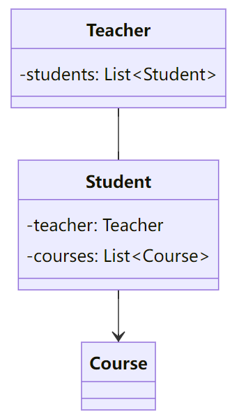
聚合关系：关联关系的一种，整体与与部分的关系，且部分可以离开整体而单独存在。
代码表现：成员变量
箭头方向：带空心菱形的实心线，菱形指向整体
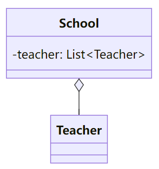
组合关系：联关系的一种，整体与与部分的关系，且部分不可以离开整体而单独存在。
代码表现：成员变量
箭头方向：带实心菱形的实线，菱形指向整体
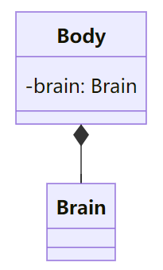
实现关系：接口和实现类，带三角箭头的实线指向接口；
泛化关系：父子类之间的继承关系，带三角箭头的虚线指向父类；
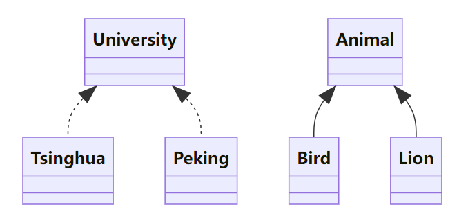
1 单例模式
核心思想：保证一个类只有一个实例，并提供一个全局访问点来访问这个实例。
优点：
- 全局控制：可以严格的控制客户怎样访问/何时访问，即对唯一实例的受控访问。
- 节省资源：单例避免多次创建了相同的对象，节省了系统资源，且多个模块可以通过单例实例共享数据。
- 懒加载：在需要时才实例化，可以提高程序的性能。
基本组成：私有的构造函数、静态实例变量，公有的静态方法；
1
2
3
4
5
6classDiagram
class Singleton{
-instance: Singleton
- Singleton()
+ GetInstance()
}实现：
饿汉模式：在类加载时就已经完成了创建，可能造成资源浪费，但一般不存在多个线程同时尝试初始化实例的问题。
1
2
3
4
5
6
7
8
9
10
11
12// hpp
class Singleton {
public:
static Singleton& getInstance() { return s_instance; }
Singleton(const Singleton&) = delete;
Singleton& operator=(const Singleton&) = delete;
private:
Singleton() = default;
static Singleton s_instance;
}
// cpp
Singleton Singleton::s_instance;懒汉模式：首次调用才被创建，避免资源浪费（如果Instance类很大）
1
2
3
4
5
6
7
8
9
10
11
12
13
14
15
16
17
18
19
20
21
22// Double-Checked Locking
Class Singleton {
public:
static Singleton* getInstance() {
if (!p_instance) { // 减少对同步锁的竞争，提高效率
lock_guard<mutex> lck(mtx);
if (!p_instance) {
p_instance = new Singleton();
}
}
return p_instance;
}
Singleton(const Singleton&) = delete;
Singleton& operator=(const Singleton&) = delete;
private:
Singleton() = default;
static Singleton* p_singleton;
static mutex mtx;
};
// cpp
Singleton* Singleton::p_singleton = nullptr;
mutex Singleton::mtx;C++11标准规定了局部静态变量的初始化必须是线程安全的，因此可利用局部静态变量来实现单例。
当多个线程同时到达局部静态变量的初始化语句时，保证只有一个线程将执行初始化代码，而其他线程将等待这个初始化完成。
1
2
3
4
5
6
7
8
9
10
11
12// Meyer's Singleton
class Singleton {
public:
static Singleton& getInstance() {
static Singleton s_instance;
return s_instance;
}
Singleton(const Singleton&) = delete;
Singleton& operator=(const Singleton&) = delete;
private:
Singleton() = default;
};
2 工厂模式
2.1 简单工厂模式
- 核心思想：将各种产品对象的创建过程封装在一个工厂类中。
- 基本组成：工厂、抽象产品（接口）、具体产品；
- 缺点：对修改不封闭，新增产品需要修改工厂，违反了OCP原则；
2.2 工厂模式
核心思想：引入抽象工厂和具体工厂的概念，每个具体工厂负责创建对应的具体产品，新增产品秩只需添加新的工厂类而无需修改原来的代码；
基本组成：抽象工厂（接口）、具体工厂、抽象产品（接口）、具体产品；
优点：新增产品更灵活、支持扩展，符合开闭原则；
应用场景：
- Spring 框架中的 Bean 工厂：通过配置文件或注解，Spring 可以根据配置信息动态地创建和管理对象。
- JDBC 中的 Connection 工厂：在 Java 数据库连接中，
DriverManager使用工厂方法模式来创建数据库连接。不同的数据库驱动（如 MySQL、PostgreSQL 等）都有对应的工厂来创建连接。

2.3 抽象工厂模式
核心思想：
- 简单工厂，一个工厂创建所有具体产品；
- 工厂方法，一个工厂创建一个具体产品；
- 抽象工厂，一个工厂创建一类具体产品；

基本组成：
1
2
3
4
5
6
7
8
9
10
11
12
13
14
15
16
17
18// Simple Factory
factory.create('A'); // product A
factory.create('B'); // product B
// Factory Method
// factory_ab <|-- factory_a
// factory_ab <|-- factory_b
factory_a.create(); // product A
factory_b.create(); // product B
// Abstract Factory
// factory <|-- factory_1/2
// product_a <|-- product_a_1/2
// product_b <|-- product_b_1/2
factory_1.create_a(); // product A1
factory_1.create_b(); // product B1
factory_2.create_a(); // product A2
factory_2.create_b(); // product B2
3 建造者模式
💬 3.1 意图
将对象的构建过程分为多个步骤，并为每个步骤定义一个抽象的接口。具体的构建过程由实现了这些接口的具体建造者类来完成。
而指导者类负责按照一定的顺序来执行构建步骤，最终生成产品。
🙁 3.2 问题
假设有这样一个复杂对象， 在对其进行构造时需要对诸多成员变量和嵌套对象进行繁复的初始化工作。这些初始化代码通常深藏于一个包含众多参数且让人基本看不懂的构造函数中； 甚至还有更糟糕的情况， 那就是这些代码散落在客户端代码的多个位置。
😊 3.3 解决方案
生成器模式建议将对象构造代码从产品类中抽取出来， 将对象构造过程划分为一组步骤，放在一个名为Builder的独立对象中。
可以创建多个不同的生成器， 用不同方式实现一组相同的创建步骤。来生成不同类型的对象。
进一步将用于创建产品的一系列Builder步骤调用抽取成为单独的Director类,以便在程序中反复使用。
🚀 3.4 建造者模式结构
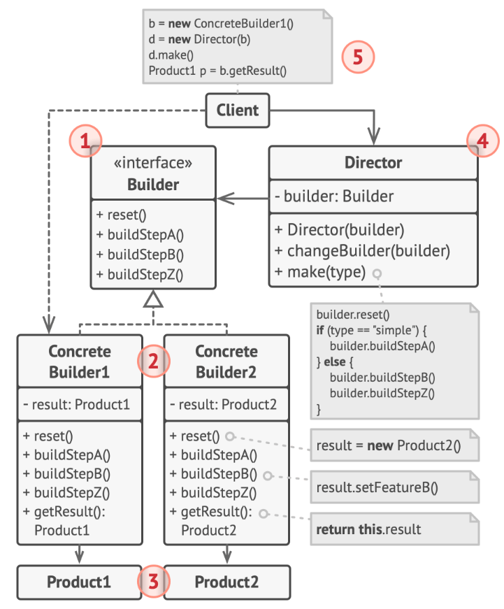
- 生成器 （Builder） 接口声明在所有类型生成器中通用的产品构造步骤。
- 具体生成器 （Concrete Builders） 提供构造过程的不同实现。 具体生成器也可以构造不遵循通用接口的产品。
- 产品 （Products） 是最终生成的对象。 由不同生成器构造的产品无需属于同一类层次结构或接口。
- 主管 （Director） 类定义调用构造步骤的顺序， 这样你就可以创建和复用特定的产品配置。
💡 3.5 适用场景
🐞 复杂对象的构建、构建过程需解耦、对象构建需多样化；
HTML/XML文档构建、用户界面设计、SQL查询语句构建
🎲 3.6 优缺点
✔ 封装性好，构建和表示分离；符合单一职责原则，
✔ 扩展性好，各个具体的建造者相互独立，利于系统解耦；
✔ 控制风险细节，分步创建、延迟创建 (build时才创建)、递归链式创建；
❌ 产品的组成部分/构建步骤尽量相同，限制了其使用范围；
❌ 产品内部发生变化，建造者需同步修改，后期维护成本可能变大；
4 原型模式
💬 4.1 意图
基于现有的对象创建新的对象，将原型对象的成员变量复制到新生成的对象中，而不需使代码依赖它们所属的类。
🙁 4.2 问题
- 直接复制对象（“从外部” 复制对象并非总是可行），必须知道对象所属的类才能创建复制品， 所以代码必须依赖该类；
- 此外，有时只知道对象所实现的接口， 而不知道其所属的具体类，比如向方法的某个参数传入实现了某个接口的任何对象；
😊 4.3 解决方案
原型模式将克隆过程委派给被克隆的实际对象。 模式为所有支持克隆的对象声明了一个通用接口， 该接口让你能够克隆对象， 同时又无需将代码和对象所属类耦合。
所有的类对 clone方法的实现都非常相似。 该方法会创建一个当前类的对象， 然后将原始对象所有的成员变量值复制到新建的类中。
支持克隆的对象即为原型。 当你的对象有几十个成员变量和几百种类型时， 对其预生成原型可以代替子类的构造（避免子类实例化的复杂，无需关心该实例是如何通过子类化构造出来的）。


其运作方式如下： 创建一系列不同类型的对象并不同的方式对其进行配置。 如果所需对象与预先配置的对象相同， 那么你只需克隆原型即可， 无需新建一个对象。
🚀 4.4 原型模式结构
基本实现


原型 （Prototype） 接口将对克隆方法进行声明。 在绝大多数情况下， 其中只会有一个名为
clone克隆的方法。具体原型 （Concrete Prototype） 类将实现克隆方法。 除了将原始对象的数据复制到克隆体中之外， 该方法有时还需处理克隆过程中的极端情况， 例如克隆关联对象和梳理递归依赖等等。
克隆方法通常只有一行代码： 使用
new运算符调用原型版本的构造函数。客户端 （Client） 可以复制实现了原型接口的任何对象。
原型注册表实现


- 原型注册表 （Prototype Registry） 提供了一种访问常用原型的简单方法， 其中存储了一系列可供随时复制的预生成对象。
💡 4.5 适用场景
🐞 如果你需要复制一些对象， 同时又希望代码独立于这些对象所属的具体类；
🐞 动态生成对象：原型模式允许在运行时动态生成对象的副本。
例如，在某些需要根据外部输入或者配置文件来创建对象的应用中，使用预生成原型可以简化对象的生成过程，因为你可以在运行时选择合适的原型进行复制，而不是靠硬编码的方式来决定使用哪个子类。
🐞 对象状态的复用：对于一些初始化资源消耗较大的对象，如那些需要从数据库加载数据的对象，新创建的对象可以自动继承其原型对象的状态；
🎲 4.6 优缺点
✔ 可以克隆对象，无需与它们所属的类相耦合；动态生成对象副本；
✔ 可以克隆预生成原型，避免反复运行初始化代码；对象状态的复用；
❌ 克隆包含循环引用的复杂对象可能会非常麻烦。
5 适配器模式
💬 5.1 意图
适配器能够转换对象接口， 使其能与其他对象进行交互。
🚀 5.2 适配器模式结构
对象适配器
适配器实现了其中一个对象的接口， 并对另一个对象进行封装。 所有流行的编程语言都可以实现适配器。
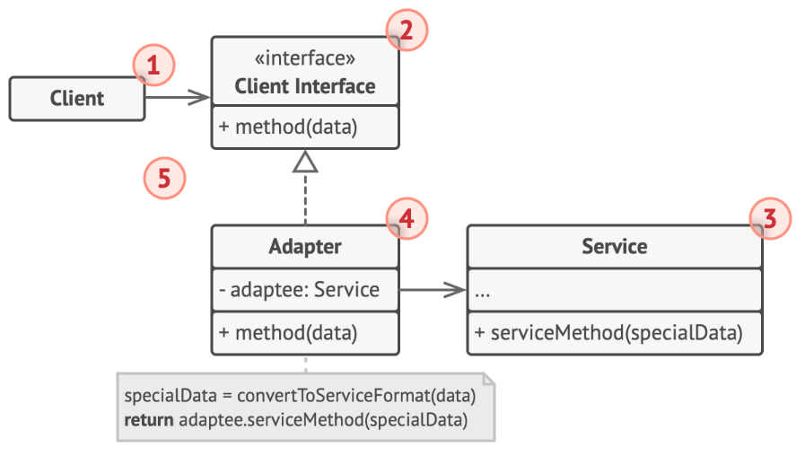
类适配器
这一实现使用了继承机制： 适配器同时继承两个对象的接口。 请注意， 这种方式仅能在支持多重继承的编程语言中实现， 例如 C++。
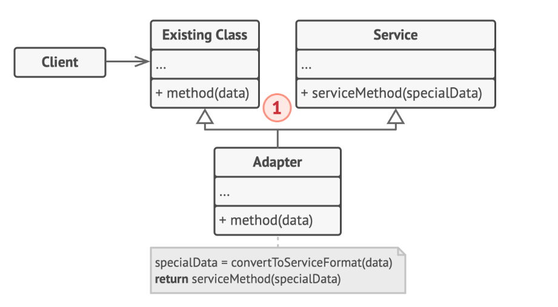
🎲 5.3 优缺点
✔ 单一职责原则，你可以将接口或数据转换代码从程序主要业务逻辑中分离。
✔ 不修改现有客户端代码的情况下在程序中添加新类型的适配器。
❌ 新增一系列接口和类导致代码整体复杂度增加。
6 代理模式
💬 6.1 意图
代理模式让你能够提供对象的替代品或其占位符。 代理控制着对于原对象的访问， 并允许在将请求提交给对象前后进行一些处理。
🚀 6.2 代理模式结构
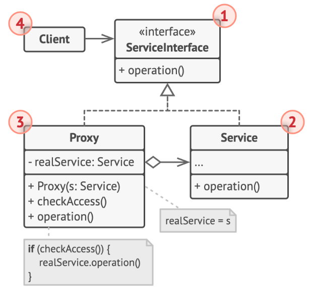
💡 6.3 适用场景
🐞 延迟初始化 （虚拟代理）。 如果你有一个偶尔使用的重量级服务对象， 一直保持该对象运行会消耗系统资源时， 可使用代理模式。
🐞 访问控制 （保护代理）。 如果你只希望特定客户端使用服务对象， 这里的对象可以是操作系统中非常重要的部分， 而客户端则是各种已启动的程序 （包括恶意程序）， 此时可使用代理模式。
🐞 本地执行远程服务 （远程代理）。 适用于服务对象位于远程服务器上的情形。代理通过网络传递客户端请求， 负责处理所有与网络相关的复杂细节。
🐞 记录日志请求 （日志记录代理）。
🐞 缓存请求结果 （缓存代理）。 适用于需要缓存客户请求结果并对缓存生命周期进行管理。代理可对重复请求所需的相同结果进行缓存， 还可使用请求参数作为索引缓存的键值。
7 装饰模式
💬 7.1 意图
允许你通过将对象放入包含行为的特殊封装对象中来为原对象绑定新的行为。
客户端代码将基础通知器放入一系列自己所需的装饰中。 因此最后的对象将形成一个栈结构。实际与客户端进行交互的对象将是最后一个进入栈中的装饰对象。 由于所有的装饰都实现了与通知基类相同的接口， 客户端的其他代码并不在意自己到底是与 “纯粹” 的通知器对象， 还是与装饰后的通知器对象进行交互。
- 类比穿衣服：一个小人—>(冷)穿毛衣—>(还冷)加夹克—>(下雨)穿雨衣；

🚀 7.2 代理模式结构
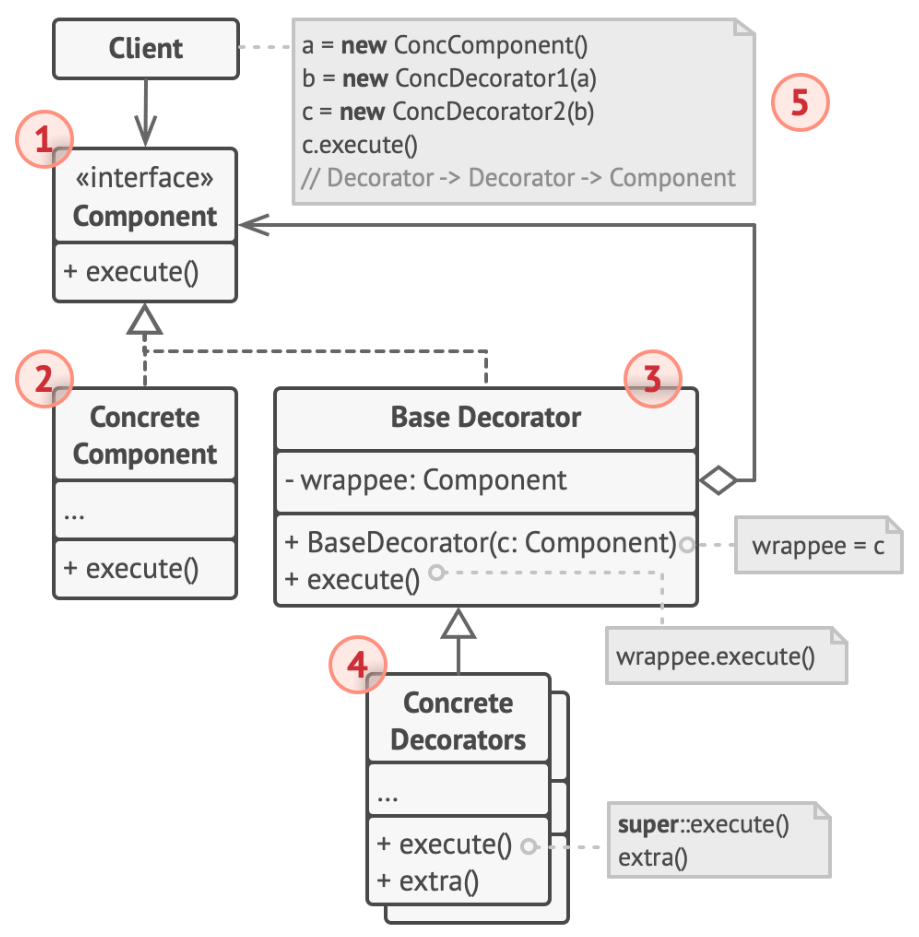
- 部件 （Component） 声明封装器和被封装对象的公用接口。为了保持一致的接口，故装饰器和被装饰对象都需实现公用接口
- 具体部件 （Concrete Component） 类是被封装对象所属的类。 它定义了基础行为， 但装饰类可以改变这些行为。
- 基础装饰 （Base Decorator） 类拥有一个指向被封装对象的引用成员变量。 该变量的类型应当被声明为通用部件接口， 这样它就可以引用具体的部件和装饰。 装饰基类会将所有操作委派给被封装的对象。
- 具体装饰类 （Concrete Decorators） 定义了可动态添加到部件的额外行为。 具体装饰类会重写装饰基类的方法， 并在调用父类方法之前或之后进行额外的行为。
- 客户端 （Client） 可以使用多层装饰来封装部件， 只要它能使用通用接口与所有对象互动即可。
💡 7.3 适用场景
🐞 动态的添加和覆盖功能：当对象的功能要求可以动态地添加，也可以再动态地撤销时可以使用装饰模式
装饰能将业务逻辑组织为层次结构， 你可为各层创建一个装饰， 在运行时将各种不同逻辑组合成对象。 由于这些对象都遵循通用接口， 客户端代码能以相同的方式使用这些对象。
🐞 当需要给⼀个现有类添加附加功能，但由于某些原因不能使用继承来生成子类进行扩充时（如 final最终关键字来限制对某个类的进一步扩展）。 复用最终类已有行为的唯一方法是使用装饰模式： 用封装器对其进行封装。
🎲 7.4 优缺点
✔ 无需创建子类即可扩展对象行为；可用封装器组合几种行为；
❌ 在封装器栈中删除特定封装器比较困难；实现行为不受装饰栈顺序影响的装饰比较困难；各层的初始化配置代码看上去可能会很糟糕；
- 责任链模式和装饰模式的类结构非常相似，但责任链可以相互独立地执行一切操作， 还可以随时停止传递请求；而装饰器则是扩展对象的行为且无法中断请求的传递。
- 组合模式和装饰的结构图很相似， 因为两者都依赖递归组合来组织无限数量的对象。
- 装饰只有一个子组件。 此外装饰为被封装对象添加了额外的职责， 组合仅对其子节点的结果进行了 “求和”；
8 桥接模式
💬 8.1 意图
桥接模式的UML图很像⼀座桥，它通过将【抽象部分】与【实现部分】分离，使它们可以独立变化，从而达到降低系统耦合度的目的。桥接模式的主要目的是通过组合建立两个类之间的联系，而不是继承的方式。
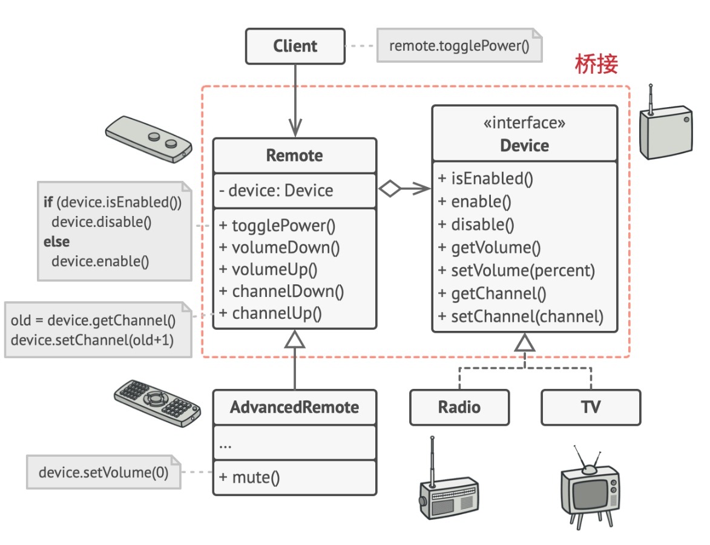
🚀 8.2 桥接模式结构
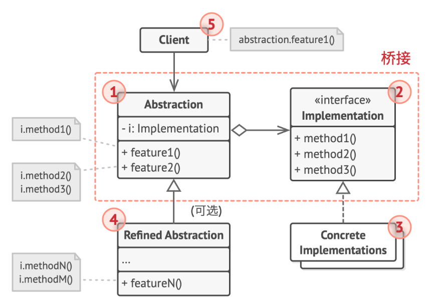
抽象部分 （Abstraction） 提供高层控制逻辑， 依赖于完成底层实际工作的实现对象。
实现部分 （Implementation） 为所有具体实现声明通用接口。 抽象部分仅能通过在这里声明的方法与实现对象交互。
抽象部分可以列出和实现部分一样的方法， 但是抽象部分通常声明一些复杂行为， 这些行为依赖于多种由实现部分声明的原语操作。
具体实现 （Concrete Implementations） 中包括特定于平台的代码。
精确抽象 （Refined Abstraction） 提供控制逻辑的变体。 与其父类一样， 它们通过通用实现接口与不同的实现进行交互。
通常情况下， 客户端 （Client） 仅关心如何与抽象部分合作。 但是， 客户端需要将抽象对象与一个实现对象连接起来。
💡 8.3 适用场景
🐞 想要拆分或重组一个具有多重功能的庞杂类 （例如能与多个数据库服务器进行交互的类）， 可以使用桥接模式。
将每个维度抽取为独立的类层次。 初始类将相关工作委派给属于对应类层次的对象， 无需自己完成所有工作。
🎲 8.4 优缺点
✔ 创建与平台无关的类和程序；客户端代码仅与高层抽象部分进行互动， 不会接触到平台的详细信息。
✔ 开闭原则。 可以新增抽象部分和实现部分， 且它们之间不会相互影响。
✔ 单一职责原则。 抽象部分专注于处理高层逻辑， 实现部分处理平台细节。
❌ 对高内聚的类使用该模式可能会让代码更加复杂。
9 组合模式
💬 9.1 意图
组合模式可以将对象组合成树状结构，来表示“部分-整体”的层次关系， 并且能像使用独立对象一样使用它们，无需区分它们的具体类型。
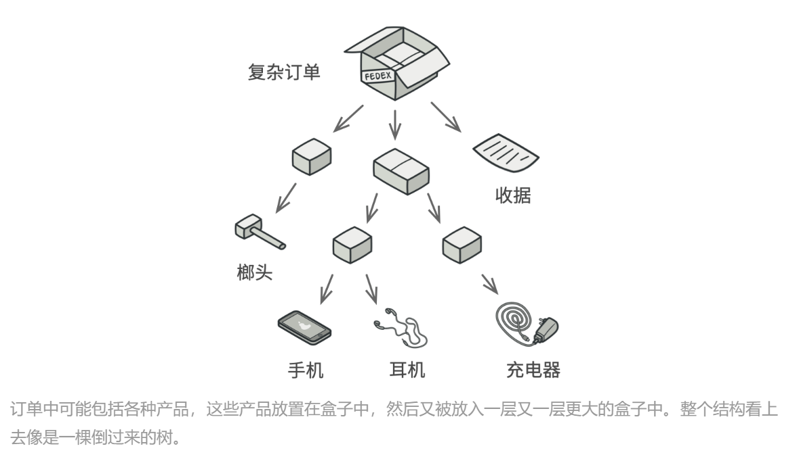
🚀 9.2 组合模式结构
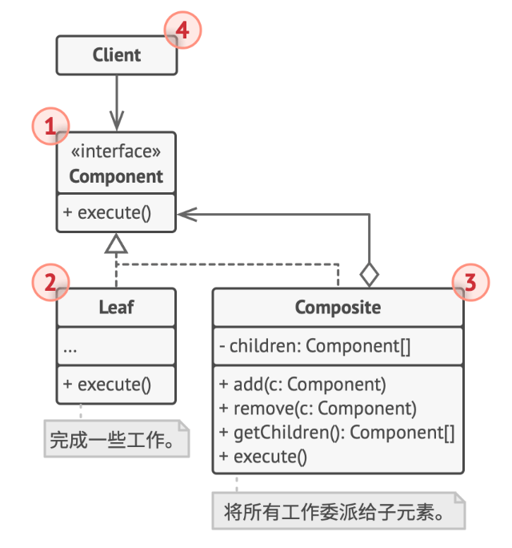
组件 （Component） 接口描述了树中简单项目和复杂项目所共有的操作。
叶节点 （Leaf） 是树的基本结构， 它不包含子项目。
一般情况下， 叶节点最终会完成大部分的实际工作， 因为它们无法将工作指派给其他部分。
容器 （Container）——又名 “组合 （Composite）”——是包含叶节点或其他容器等子项目的单位。 容器不知道其子项目所属的具体类， 它只通过通用的组件接口与其子项目交互。
容器接收到请求后会将工作分配给自己的子项目， 处理中间结果， 然后将最终结果返回给客户端。
客户端 （Client） 通过组件接口与所有项目交互。 因此， 客户端能以相同方式与树状结构中的简单或复杂项目交互。
💡 9.3 适用场景
🐞 如果需要实现树状对象结构， 组合模式为你提供了两种共享公共接口的基本元素类型： 简单叶节点和复杂容器。 容器中可以包含叶节点和其他容器。 这使得你可以构建树状嵌套递归对象结构。
🐞 希望客户端代码以相同方式处理简单和复杂元素，组合模式中定义的所有元素共用同一个接口。 在这一接口的帮助下， 客户端不必在意其所使用的对象的具体类。
🎲 9.4 优缺点
✔ 以利用多态和递归机制更方便地使用复杂树结构。
✔ 开闭原则。无需更改现有代码， 就可以在应用中添加新元素， 使其成为对象树的一部分。
❌ 对于功能差异较大的类， 提供公共接口或许会有困难。 在特定情况下， 你需要过度一般化组件接口， 使其变得令人难以理解。
- 责任链模式通常和组合模式结合使用。 在这种情况下， 叶组件接收到请求后， 可以将请求沿包含全体父组件的链一直传递至对象树的底部。
- 你可以使用迭代器模式来遍历组合树。
- 你可以使用访问者模式对整个组合树执行操作。
- 你可以使用享元模式实现组合树的共享叶节点以节省内存。
10 外观模式
💬 10.1 意图
外观模式能为程序库、 框架或其他复杂类提供一个简单的接口。
当你通过电话给商店下达订单时， 接线员就是该商店的所有服务和部门的外观。 接线员为你提供了一个同购物系统、 支付网关和各种送货服务进行互动的简单语音接口。
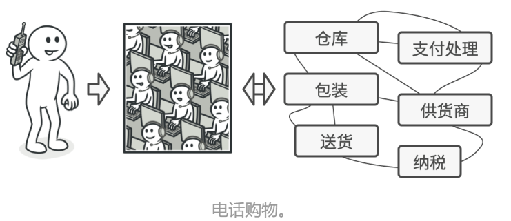
🚀 10.2 外观模式结构
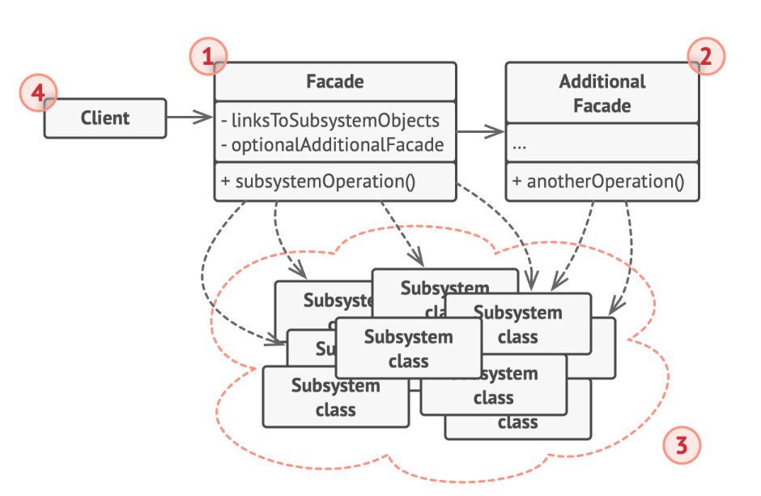
外观 （Facade） 提供了一种访问特定子系统功能的便捷方式， 其了解如何重定向客户端请求， 知晓如何操作一切活动部件。
创建附加外观 （Additional Facade） 类可以避免多种不相关的功能污染单一外观， 使其变成又一个复杂结构。 客户端和其他外观都可使用附加外观。
复杂子系统 （Complex Subsystem） 由数十个不同对象构成。 如果要用这些对象完成有意义的工作， 你必须深入了解子系统的实现细节， 比如按照正确顺序初始化对象和为其提供正确格式的数据。
子系统类不会意识到外观的存在， 它们在系统内运作并且相互之间可直接进行交互。
客户端 （Client） 使用外观代替对子系统对象的直接调用。
💡 10.3 适用场景
🐞 如果你需要一个指向复杂子系统的直接接口， 且该接口的功能有限，外观将会提供指向子系统中最常用功能的快捷方式， 能够满足客户端的大部分需求。
🎲 10.4 优缺点
✔ 你可以让自己的代码独立于复杂子系统。
❌ 外观可能成为与程序中所有类都耦合的上帝对象。
- 外观类通常可以转换为单例模式类， 因为在大部分情况下一个外观对象就足够了。
- 当只需对客户端代码隐藏子系统创建对象的方式时， 你可以使用抽象工厂模式来代替外观。
- 享元模式展示了如何生成大量的小型对象， 外观则展示了如何用一个对象来代表整个子系统。
- 外观和中介者模式的职责类似： 它们都尝试在大量紧密耦合的类中组织起合作。
- 外观为子系统中的所有对象定义了一个简单接口， 但是它不提供任何新功能。 子系统本身不会意识到外观的存在。 子系统中的对象可以直接进行交流。
- 中介者将系统中组件的沟通行为中心化。 各组件只知道中介者对象， 无法直接相互交流。
11 享元模式
💬 11.1 意图
通过共享多个对象所共有的相同状态， 使得能在有限的内存容量中载入更多对象。
对象的常量数据通常被称为内在状态， 其位于对象中， 其他对象只能读取但不能修改其数值。 而对象的其他状态常常能被其他对象 “从外部” 改变， 因此被称为外在状态。
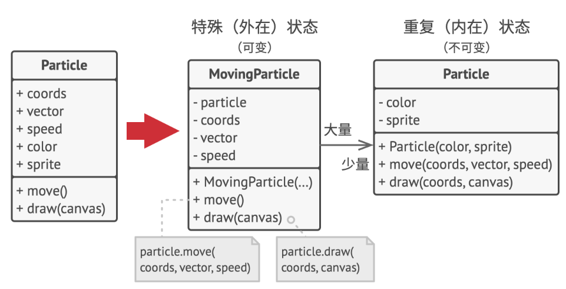
享元模式建议不在对象中存储外在状态， 而是将其传递给依赖于它的一个特殊方法。 程序只在对象中保存内在状态， 以方便在不同情景下重用。 这些对象的区别仅在于其内在状态 （与外在状态相比， 内在状态的变体要少很多）， 因此你所需的对象数量会大大削减。
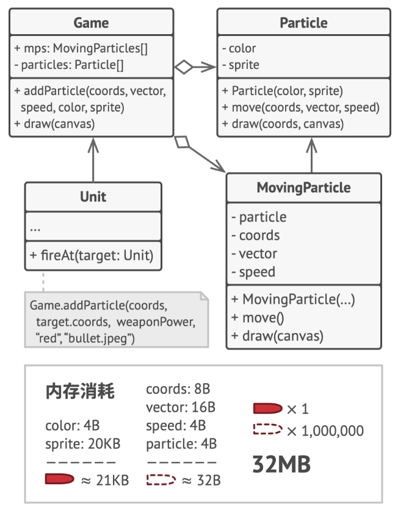
享元与不可变性：由于享元对象可在不同的情景中使用， 你必须确保其状态不能被修改。 享元类的状态只能由构造函数的参数进行一次性初始化， 它不能对其他对象公开其设置器或公有成员变量。
🚀 11.2 享元模式结构
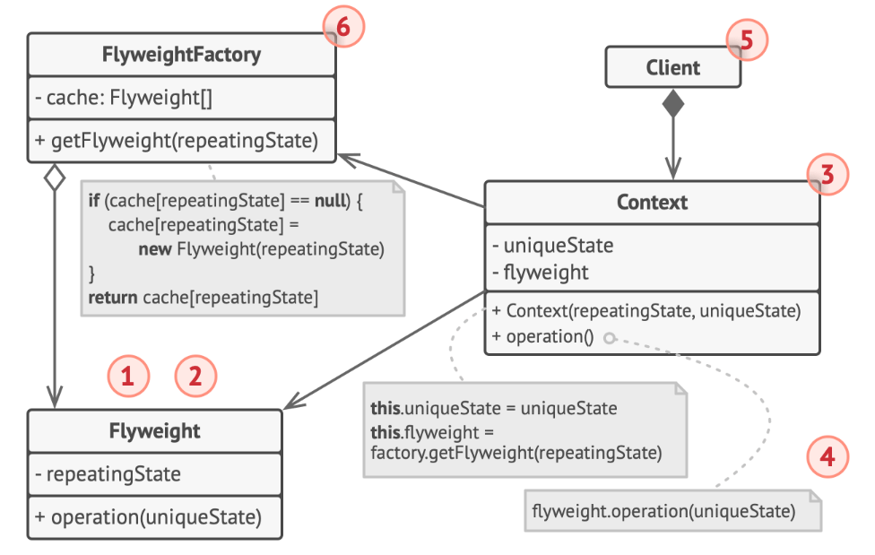
- 享元模式只是一种优化。 在应用该模式之前， 你要确定程序中存在与大量类似对象同时占用内存相关的内存消耗问题， 并且确保该问题无法使用其他更好的方式来解决。
- 享元 （Flyweight） 类包含原始对象中部分能在多个对象中共享的状态。 同一享元对象可在许多不同情景中使用。 享元中存储的状态被称为 “内在状态”。 传递给享元方法的状态被称为 “外在状态”。
- 情景 （Context） 类包含原始对象中各不相同的外在状态。 情景与享元对象组合在一起就能表示原始对象的全部状态。
- 通常情况下， 原始对象的行为会保留在享元类中。 因此调用享元方法必须提供部分外在状态作为参数。 但你也可将行为移动到情景类中， 然后将连入的享元作为单纯的数据对象。
- 客户端 （Client） 负责计算或存储享元的外在状态。 在客户端看来， 享元是一种可在运行时进行配置的模板对象， 具体的配置方式为向其方法中传入一些情景数据参数。
- 享元工厂 （Flyweight Factory） 会对已有享元的缓存池进行管理。 有了工厂后， 客户端就无需直接创建享元， 它们只需调用工厂并向其传递目标享元的一些内在状态即可。 工厂会根据参数在之前已创建的享元中进行查找， 如果找到满足条件的享元就将其返回； 如果没有找到就根据参数新建享元。
💡 11.3 适用场景
🐞 仅在程序必须支持大量对象且没有足够的内存容量时使用享元模式——对象中包含可抽取且能在多个对象间共享的重复状态；程序需要生成数量巨大的相似对象；
🎲 11.4 优缺点
✔ 你可以让自己的代码独立于复杂子系统。
❌ 可能需要牺牲执行速度来换取内存，
❌ 代码会变得更加复杂（可能难以理解“为什么要像这样拆分一个实体的状态？”）。
相互关系
构建型模式
- 在许多设计工作的初期都会使用工厂方法模式 （较为简单， 而且可以更方便地通过子类进行定制）， 随后演化为使用抽象工厂模式、 原型模式或生成器模式 （更灵活但更加复杂）。
- 生成器重点关注如何分步生成复杂对象。 抽象工厂专门用于生产一系列相关对象。 抽象工厂会马上返回产品， 生成器则允许你在获取产品前执行一些额外构造步骤。
结构型模式
- 桥接模式通常会于开发前期进行设计， 使你能够将程序的各个部分独立开来以便开发。 另一方面， 适配器模式通常在已有程序中使用， 让相互不兼容的类能很好地合作。
- 适配器可以对已有对象的接口进行修改， 装饰模式则能在不改变对象接口的前提下强化对象功能。 此外， 装饰还支持递归组合， 适配器则无法实现。
- 适配器能为被封装对象提供不同的接口， 代理模式能为对象提供相同的接口， 装饰则能为对象提供加强的接口。
- 外观模式为现有对象定义了一个新接口， 适配器则会试图运用已有的接口。 适配器通常只封装一个对象， 外观通常会作用于整个对象子系统上。
- 桥接、 状态模式和策略模式 （在某种程度上包括适配器） 模式的接口非常相似。 实际上， 它们都基于组合模式——即将工作委派给其他对象， 不过也各自解决了不同的问题。 模式并不只是以特定方式组织代码的配方， 你还可以使用它们来和其他开发者讨论模式所解决的问题。
- 适配器模式能为被封装对象提供不同的接口， 代理模式能为对象提供相同的接口， 装饰模式则能为对象提供加强的接口。
- 外观模式与代理的相似之处在于它们都缓存了一个复杂实体并自行对其进行初始化。 代理与其服务对象遵循同一接口， 使得自己和服务对象可以互换， 在这一点上它与外观不同。
- 装饰和代理有着相似的结构， 但是其意图却非常不同。 这两个模式的构建都基于组合原则， 也就是说一个对象应该将部分工作委派给另一个对象。 两者之间的不同之处在于代理通常自行管理其服务对象的生命周期， 而装饰的生成则总是由客户端进行控制。
继承与聚合
设计原则
RAII (Resource Acquisition Is Initialization，资源获取即初始化): 确保所有资源（如指针、文件句柄、网络连接等）都封装在类对象里，让对象的生命周期管理资源。
资源的获取（Allocation）应在对象构造时完成
资源的释放（Deallocation）自动在对象的析构时执行
异常安全：RAII保证无论对象是因为作用域结束还是因为异常而离开作用域，资源的释放将总是自动发生。
当C++程序中抛出一个异常时，程序控制流会从抛出异常的点跳转到能够处理该异常的捕捉点（catch block）。在这一过程中，程序会展开堆栈，退出当前作用域及其父作用域，直到找到合适的异常处理代码。在展开堆栈的过程中，局部对象会被销毁，其析构函数按照创建的逆序被调用。因此，RAII类的析构函数将负责释放其管理的资源，即使是在异常发生时。
优点：
- 代码更加简洁明了、易于维护；
- 自动资源管理、减少了资源泄露的风险；
- 提高了代码的异常安全性；
- 单一职责原则（SRP，Single Responsibility Principle）：一个类/模块应该有且只有一个特定的职责，若超过一个，则模块可能变得复杂，导致代码维护性、可读性和可重用性降低。
- 相关模式：装饰器
- 里氏替换原则（LSP，Liskov Substitution Principle）
- 依赖倒置原则（DIP，Dependence Inversion Principle）
- 接口隔离原则（ISP，Interface Segregation Principle）
- 迪米特法则（LoD，Law of Demeter）
- 开放封闭原则（OCP，Open Close Principle）：软件实体（类/模块/函数等）应该是可扩展的，但是不可修改的。
- 相关模式：组合